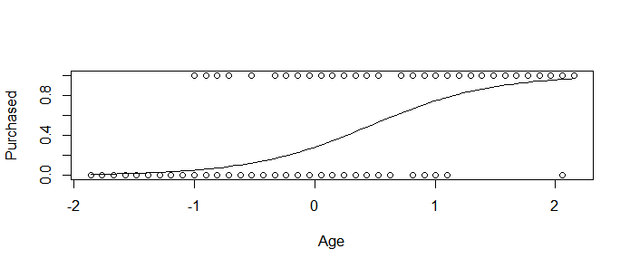
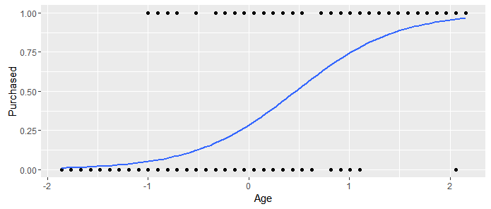
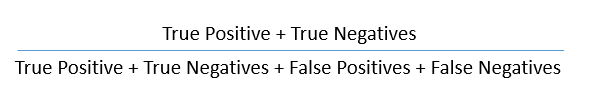

In this PW we are going to analyse the Social_Network_Adsdataset . This dataset contains informations of users of a social network. The social network has several business clients and its business clients put ads on the social network for marketing compaigns purposes. For this dataset, a company has put ads for one of its new products and the social network gathered some informations about wich users responded positively to the ad by buying the product and those who responded negatively by not buying the product.
1. Download the Social_Network_Adsdataset and import it into .
2.Explore and Describe the dataset (you can use str() and summary() functions, you can calculate and visualize the correlations, show some histograms, scatterplots, pie charts, etc..).
We will consider the variables Age and
EstimatedSalary as input variables (features) to see the
correlations between them and the decision of the user to buy (or not)
the product.
3. Now we are going to split the dataset into training set and test set. Last week we did it manually. From now on we will split it randomly, you can use this code (after undestanding it of course):
library(caTools)# install it first in the consoleset.seed(123)# we use the function set.seed() with the same seed number# to randomly generate the same values, you already know that right? #and you know why we want to generate the same values, am I wrong? split=sample.split(dataset$Purchased, SplitRatio =0.75)# here we chose the SplitRatio to 75% of the dataset,# and 25% for the test set.training_set=subset(dataset, split==TRUE)# we use subset to split the datasettest_set=subset(dataset, split==FALSE)
4. Scale the input variables in both training set and test set. Do you know what is scaling? Explain it one sentence.
5. Now fit a simple logistic regression model of Purchased in function of Age.
6. As you saw in the Logistic Regression chapter and in the previous question, we choose argument family to be binomial when we use the function glm. Explain why!
7. Write in a equation the model you obtained in question 5? (Read the following note concerning this question).
Note that there are three different ways to express the equation of a
Logistic Regression model.
8. Is the feature Age significant to the model? Justify your answer.
9. What is the value of AIC of the model?
The AIC is the Akaike Information
Criterion. You will use this while comparing multiple models.
The model with lower value of AIC is better. Suppose that we have a
statistical model of some data. Let \({\hat {L}}\) be the maximum value of the likelihood function for the
model; let \(k\) be the number of
estimated parameters in the model. Then the AIC value of the model is
the following.
\[ \text{AIC} = 2 k-2
\ln(\hat{L})\]
where
\(\hat{L}\) = the maximized value
of the likelihood function of the model \(M\), i.e. \(\hat{L}=p(x|{\hat{\beta }},M)\), where
\(\hat{\beta}\) are the parameter
values that maximize the likelihood function.
\(x\) = the observed data.
\(k\) = the number of free
parameters to be estimated. If the model under consideration is a linear
regression, \(k\) is the number of
regressors, including the intercept.
10. Plot Purchased in function of Age and add the curve of the obtained logistic regression model.
(Hints: One way to do it is to first plot the observations, then use the curve() function with option add=TRUE in order to add the curve to the plot. Pay attention that the argument “type” of the function predict() must be reponse)
You must obtain something like

Extra: A great package for visualization is ggplot2. Take a look on this link for some examples. With this library we obtain the following plot for our model,

I obtained the last figure with these lines of code,
11. Now let us take another feature into account in the model. Fit a logistic regression model of purchasing the product in function of the age of a user and its salary.
12. Are the predictors significant to the new model?
13. Do we obtain a better model by adding the estimated salary?
14.Predictions: On the test set, predict the probability of purchasing the product by the users using the obtained model.
15. Take a look on your predicted values for the variable Purchased. We predicted the probability that the user will purchase the product right? Now in order to compare your results with the real answers, transform the predicted values to 0 or 1 (1 if >0.5).
Hint: You can easily do it with the ifelse() function.
Now read the following about the evaluation of a classifier (of a classification model).
Confusion matrix: is a tabular representation of
Actual vs Predicted values. This helps us to find the accuracy of the
model. The different results from a binary classifier are true
positives, true negatives, false positives, and false negatives. This is
how the confusion matrix looks like:
You can calculate the accuracy of your model
with:

Accuracy is a key measure of performance, and is
more specifically the rate at which the model is able to predict the
correct value (classification or regression) for a given data point or
observation. In other words, accuracy is the proportion of correct
predictions out of all predictions made.
The other two metrics from the confusion matrix worth discussing are
Precision and Recall.
Precision (positive predictive value) is the ratio of true positives
to the total amount of positive predictions made (i.e., true or false).
Said another way, precision measures the proportion of accurate positive
predictions out of all positive predictions made.
Recall on the other hand, or true positive rate, is the ratio of true
positives to the total amount of actual positives, whether predicted
correctly or not. So in other words, recall measures the proportion of
accurate positive predictions out of all actual positive
observations.
A metric that is associated with precision and recall is called the
F-score (also called F1 score), which combines them mathematically, and
somewhat like a weighted average, in order to produce a single measure
of performance based on the simultaneous values of both. Its values
range from 0 (worst) to 1 (best).
Another important concept to know about is the Receiver
Operating Characteristic, which when plotted, results in
what’s known as an ROC curve.
ROC Curve: An ROC curve is a two-dimensional plot of
sensitivity (recall, or true positive rate) vs 1-
specificity (false positive rate). The area under the curve is
referred to as the AUC, and is a numeric
metric used to represent the quality and performance of the classifier
(model).
An AUC of 0.5 is essentially the same as random guessing without a
model, whereas an AUC of 1.0 is considered a perfect classifier.
Generally, the higher the AUC value the better, and an AUC above 0.8 is
considered quite good.
The higher the AUC value, the closer the curve gets to the upper left
corner of the plot. One can easily see from the ROC curves then that the
goal is to find and tune a model that maximizes the true positive rate,
while simultaneously minimizing the false positive rate. Said another
way, the goal as shown by the ROC curve is to correctly predict as many
of the actual positives as possible, while also predicting as many of
the actual negatives as possible, and therefore minimize errors
(incorrect classifications) for both.
16. Now in order to evaluate the model and its predictions, compute the confusion matrix. What do you obtain ?
19. Compare the AUC of the two models you fitted (one with only age and one with age and estimated salary) and plot their ROC curves in the same figure.
Social Networks Ads
In this PW we are going to analyse the
Social_Network_Adsdataset . This dataset contains informations of users of a social network. The social network has several business clients and its business clients put ads on the social network for marketing compaigns purposes. For this dataset, a company has put ads for one of its new products and the social network gathered some informations about wich users responded positively to the ad by buying the product and those who responded negatively by not buying the product.1. Download the
Social_Network_Adsdataset and import it into .2. Explore and Describe the dataset (you can use
str()andsummary()functions, you can calculate and visualize the correlations, show some histograms, scatterplots, pie charts, etc..).We will consider the variables
AgeandEstimatedSalaryas input variables (features) to see the correlations between them and the decision of the user to buy (or not) the product.3. Now we are going to split the dataset into training set and test set. Last week we did it manually. From now on we will split it randomly, you can use this code (after undestanding it of course):
4. Scale the input variables in both training set and test set. Do you know what is scaling? Explain it one sentence.
5. Now fit a simple logistic regression model of
Purchasedin function ofAge.6. As you saw in the Logistic Regression chapter and in the previous question, we choose argument
familyto bebinomialwhen we use the functionglm. Explain why!7. Write in a equation the model you obtained in question 5? (Read the following note concerning this question).
Note that there are three different ways to express the equation of a Logistic Regression model.
8. Is the feature
Agesignificant to the model? Justify your answer.9. What is the value of AIC of the model?
The AIC is the Akaike Information Criterion. You will use this while comparing multiple models. The model with lower value of AIC is better. Suppose that we have a statistical model of some data. Let \({\hat {L}}\) be the maximum value of the likelihood function for the model; let \(k\) be the number of estimated parameters in the model. Then the AIC value of the model is the following.
\[ \text{AIC} = 2 k-2 \ln(\hat{L})\]
where
10. Plot
Purchasedin function ofAgeand add the curve of the obtained logistic regression model.(Hints: One way to do it is to first plot the observations, then use the
curve()function with optionadd=TRUEin order to add the curve to the plot. Pay attention that the argument “type” of the functionpredict()must bereponse)You must obtain something like
Extra: A great package for visualization is
ggplot2. Take a look on this link for some examples. With this library we obtain the following plot for our model,I obtained the last figure with these lines of code,
11. Now let us take another feature into account in the model. Fit a logistic regression model of purchasing the product in function of the age of a user and its salary.
12. Are the predictors significant to the new model?
13. Do we obtain a better model by adding the estimated salary?
14. Predictions: On the test set, predict the probability of purchasing the product by the users using the obtained model.
15. Take a look on your predicted values for the variable
Purchased. We predicted the probability that the user will purchase the product right? Now in order to compare your results with the real answers, transform the predicted values to 0 or 1 (1 if >0.5).Hint: You can easily do it with the
ifelse()function.Now read the following about the evaluation of a classifier (of a classification model).
Confusion matrix: is a tabular representation of Actual vs Predicted values. This helps us to find the accuracy of the model. The different results from a binary classifier are true positives, true negatives, false positives, and false negatives. This is how the confusion matrix looks like:
You can calculate the accuracy of your model with:
Accuracy is a key measure of performance, and is more specifically the rate at which the model is able to predict the correct value (classification or regression) for a given data point or observation. In other words, accuracy is the proportion of correct predictions out of all predictions made.
The other two metrics from the confusion matrix worth discussing are Precision and Recall.
Precision (positive predictive value) is the ratio of true positives to the total amount of positive predictions made (i.e., true or false). Said another way, precision measures the proportion of accurate positive predictions out of all positive predictions made.
Recall on the other hand, or true positive rate, is the ratio of true positives to the total amount of actual positives, whether predicted correctly or not. So in other words, recall measures the proportion of accurate positive predictions out of all actual positive observations.
A metric that is associated with precision and recall is called the F-score (also called F1 score), which combines them mathematically, and somewhat like a weighted average, in order to produce a single measure of performance based on the simultaneous values of both. Its values range from 0 (worst) to 1 (best).
Another important concept to know about is the Receiver Operating Characteristic, which when plotted, results in what’s known as an ROC curve.
ROC Curve: An ROC curve is a two-dimensional plot of sensitivity (recall, or true positive rate) vs 1- specificity (false positive rate). The area under the curve is referred to as the AUC, and is a numeric metric used to represent the quality and performance of the classifier (model).
An AUC of 0.5 is essentially the same as random guessing without a model, whereas an AUC of 1.0 is considered a perfect classifier. Generally, the higher the AUC value the better, and an AUC above 0.8 is considered quite good.
The higher the AUC value, the closer the curve gets to the upper left corner of the plot. One can easily see from the ROC curves then that the goal is to find and tune a model that maximizes the true positive rate, while simultaneously minimizing the false positive rate. Said another way, the goal as shown by the ROC curve is to correctly predict as many of the actual positives as possible, while also predicting as many of the actual negatives as possible, and therefore minimize errors (incorrect classifications) for both.
16. Now in order to evaluate the model and its predictions, compute the confusion matrix. What do you obtain ?
(Hint: you can use the
table()function).17. Calculate the accuracy, specificity, sensitivity and the precision of the model.
(Note: You can create a function that takes a confusion matrix in input and returns the needed metrics)
18. Plot the ROC curve and calculate AUC value.
Hints: to plot it, install the
ROCRpackage. Load and use the functions:prediction()to calculate the elements of the confusion matrix.performance()to calculate the AUC.plot()to plot the ROC curve, you can plot the performance calculated before.abline()to plot a line of equationy=x.19. Compare the AUC of the two models you fitted (one with only age and one with age and estimated salary) and plot their ROC curves in the same figure.
◼